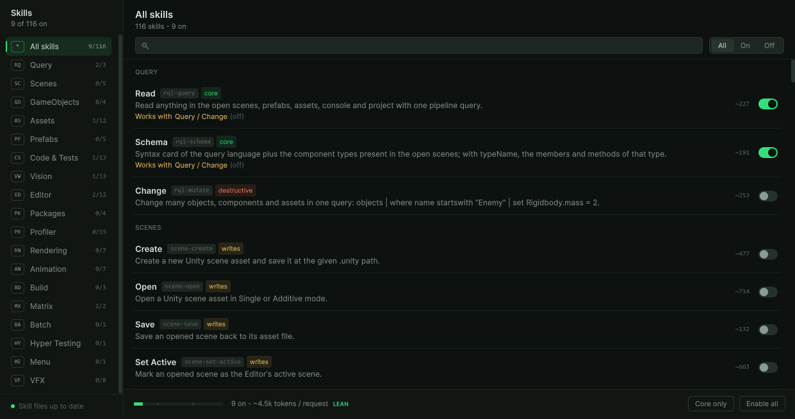

Everyday use
Choose which tools are on
Matrix has more than a hundred tools. Every tool that is switched on is described to your client in every request, which costs tokens. The Skills window lets you keep the set small and pick what a task needs.
Open it with , or from the ... menu of the Bridge window.


Find a tool#
- Pick a group on the left (Query, Scenes, GameObjects, Assets and so on), or type in the search box.
- All, On and Off filter by state.
- Each row shows the tool's name and id, one sentence of what it does, and the tokens it adds to every request while it is on.
Read the tags#
| Tag | Meaning |
|---|---|
| core | Part of the set Setup keeps on. |
| writes | Changes the scene, assets, settings or Editor state. Usually undoable. |
| destructive | Can delete or overwrite: scripts, assets, packages, the Console. Switch these on when you mean it. |
| no tag | Read-only. Changes nothing. |
When a tool works together with one that is off, its row says Works with and names the other. Click the name to switch that one on too.
Watch the token total#
The bar at the bottom adds up every tool that is on and rates the total: LEAN under 12k tokens, HEAVY from 30k. The core set is about 4.5k.
- Core only goes back to the set Setup chose.
- Enable all asks first: everything on costs about 50k tokens per request.
When a change reaches your client#
A change rewrites the skill files after about a second. Claude Code, and any client that follows the MCP tools/list_changed notice, sees the new list at once. Other clients need a reconnect; until then they can call a new tool through tool-call.
Your client can switch tools itself with tool-set-enabled-state. The Skills window shows those changes too.
UserSettings/Feeder-MCP-Config.json, which Unity does not commit. Each teammate keeps their own set.The tool catalog lists every tool with its full description, so you can decide before switching anything on.